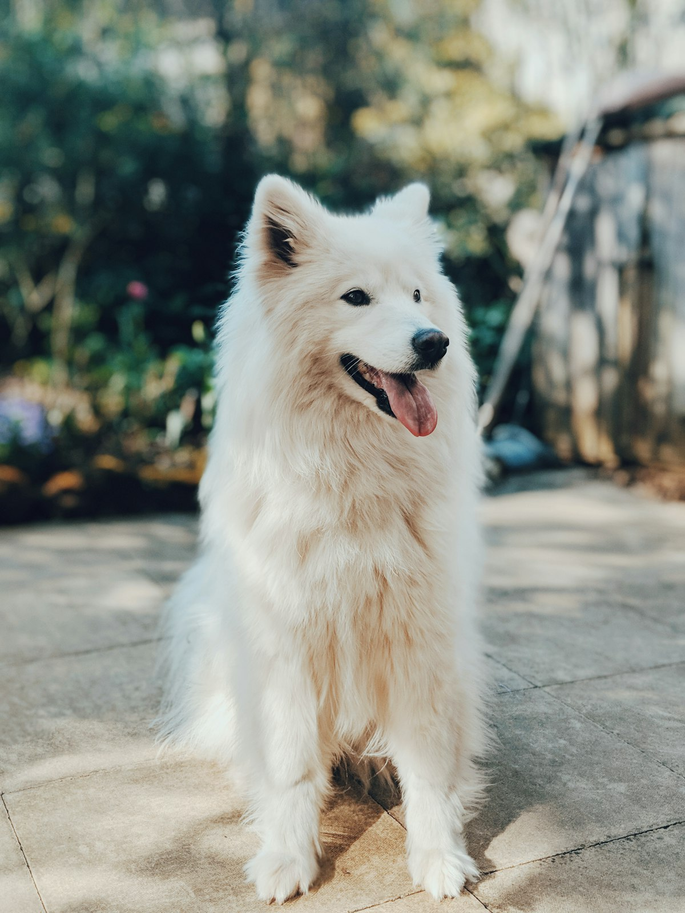
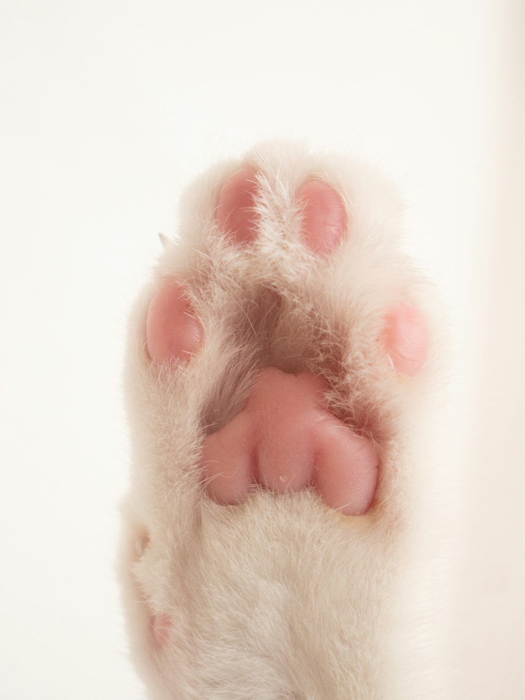

Consultorio veterinario en Canasteros, Chimalhuacán. Atención con cita, trato cálido y estacionamiento en la calle.
📍 Cómo llegarVer horarioRevisión completa y diagnóstico.
Esquemas para cachorros, gatitos y adultos.
Pregunta por cuidados especiales para tu mascota.
Procedimientos con anestesia segura.
Análisis clínicos y estudios.
Baño y corte para perros y gatos.
Somos un consultorio de barrio en Canasteros donde cada mascota es tratada como de la casa. Con 4.8 estrellas en Google, nuestros clientes destacan la calidez y el cuidado en cada consulta. Espacio amigable y seguro para todas las familias.


★★★★★“Atención muy cálida, revisaron a mi perrito con calma y me explicaron todo.”
— Cliente
★★★★★“Excelente trato y buenos precios, mi gata salió muy bien de su esterilización.”
— Clienta
★★★★★“Lugar limpio y doctores pacientes. Totalmente recomendable.”
— Cliente
Lunes a sábado de 11:00 a 18:00 y domingo de 11:00 a 16:00.
Sí, trabajamos con cita para dedicarle a tu mascota el tiempo que merece; pásate a agendarla o pregúntanos en mostrador.
Hay estacionamiento gratuito en la calle, frente al consultorio.
Perros, gatos y pequeñas especies de compañía.
Estamos en Coapatli Lote 18, colonia Canasteros; toca “Cómo llegar” para abrir la ruta en Google Maps.
📍 Coapatli Lote 18, Canasteros, 56334 Chimalhuacán, Méx.
🕙 L-S 11:00–18:00 · D 11:00–16:00 (con cita)